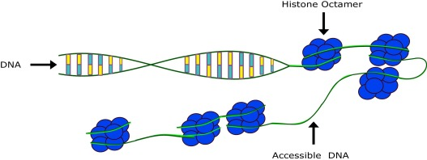

Our Biology and Health Research
We develop computational models that are inspired by biological gene regulation and hense display associated characteristics such as robustness and self-organisation and lend themselves to the simulation and optimisation of chaotic systems and dynamical control tasks.

We have applied some of these models in the medical domain, e.g. for gait control and kinematics and for movement analysis in relation to Parkinson's disease.
Eva Sousa's PhD project applied deep learning to image recognition from PET scans.
Luana Mincarelli's PhD project explores how different stress compounds act in the environment, with particular attention to biological responses in different aquatic species.
Alex Turner's EPSRC First Grant applies epigenetic networks to modelling human visceral leismaniasis.
Assistive Technology
We also do research on assistive technology e.g. for dementia. In a pilot study with the NHS and colleagues from Heriot-Watt University and the Vrije Universiteit Amsterdam, we showed that cognitive stimulation therapy can be provided by a computer-based multimodal interactive system that interacts with patients in a way that is engaging and socially acceptable.
There is currently no known cure for dementia but some intervention-based therapies including cognitive stimulation therapy have been shown to slow down the progression of the disease or delay its onset. Being able to provide the intervention in a cost-effective and sustainable way is therefore an important step towards accessible and affordable healthcare.